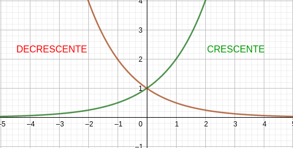

Simetria
Se uma função satisfaz f(x)=f(−x), diz-se que f é uma função par. Por sua vez, se f satisfaz f(x)=−f(x), diz-se que f é uma função impar.
EX: x2 é uma função par pois:
f(x)=x2={x2,sex≥0(−x)2=x2,x<0
Por sua vez x3 é impar.
Função par
Satisfaz a f(x)=f(−x), para todo x em domínio.
EX: x2 é uma função par e x3 é uma função ímpar

VERIFICANDO: sejam a e b, tais que a=x e b=−x, fazemos f(a) e f(b):
f(a)=a2
f(b)=b2
a2 e b2 são positivos para qualquer valores reais, assim:
$a2=x2 $
b2=(−x)2=x2
Ou seja, f(a)=f(b), assim, f(x)=x2 é uma função par.
Usando o mesmo procedimento para f(x)=x3:
f(a)=a3
f(b)=b3
a3=a2a⟺x2x⟺x3
b3=b2b⟺x2x⟺−x3
Ou seja, f(a)=−f(b), portanto f(x)=x3 é uma função ímpar.
OBS: o procedimento deve ser válido para todo x do domínio.
Função crescente e decrescente
Diz-se que f(x) crescente em um intervalo I quando:
f(x1)<f(x2), quando x1<x2
Por sua vez, a função é decrescente quando:
f(x1)>f(x2), quando x1<x2
Graficamente temos a representação como no esquema abaixo:

Tipos de função
Modelos lineares de uma função
Dizemos que um modelo representa uma função linear quando seu gráfico corresponde a uma reta ou quando pode ser representado na forma:
f(x)=mx+n
Em que m e n são constantes reais.
Modelos polinomiais
Um polinômio é uma representação algébrica que segue o formato P(x) tal que:
P(x)=a0x0+a1x1+a2x2+...+anxn
Em que a0, a1, a2, …, ansão denominados coeficientes números reais. uma função é dita polinomial se puder ser representada por P(x) arbitrário.
O grau do polinômio equivale ao valor máximo de n presente na expansão. Vale resaltar que n∈N.
Função constante: n=0
f(x)=a0
Função afim: n=1
f(x)=a0+a1x
Função de 2º grau: n=2
f(x)=a0+a1x+a1x2
Função de 3º grau: n=3
f(x)=a0+a1x+a1x2+a3x3
Funções potência
São aquelas representadas por polinômios os quais a0,a1,a2,...,an−1=0, ou seja, o único elemento não nulo é an, além disso an=1.
EX:
f(x)=x2f(x)=x3f(x)=x5
Funções racionais
São representadas pelo quocinete P(x) e Q(x) tal que seu domínio será Q(x)=0, assim:
f(x)=Q(x)P(x),Q(x)=0